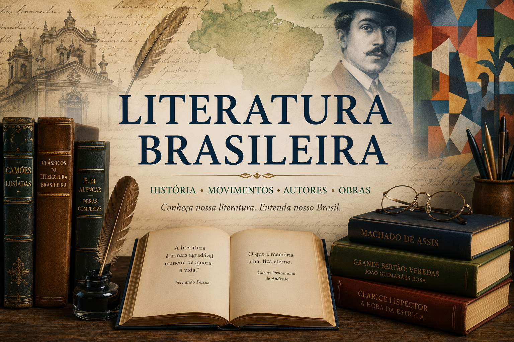

Graciliano Ramos: Biografia, Obras, Características e Importância no Modernismo Brasileiro
Conheça a trajetória de Graciliano Ramos, autor de Vidas Secas, São Bernardo, Angústia e Infância. Entenda suas principais características literárias, sua importância para a Segunda Geração Modernista e a relevância da obra Infância para o PAES UEMA 2027.
Literatura Brasileira: escolas literárias, autores e movimentos culturais
A Literatura Brasileira representa um dos principais patrimônios culturais do país, reunindo diferentes escolas literárias, movimentos artísticos, estilos de escrita e formas de representação da sociedade brasileira ao longo da história.
Desde a tradição oral indígena e a literatura colonial até os movimentos modernistas e contemporâneos, a produção literária brasileira reflete transformações históricas, políticas, sociais e culturais que contribuíram para formação da identidade nacional.
Nesta seção do Mestre Kira, você encontrará conteúdos didáticos sobre os principais períodos da Literatura Brasileira, autores, obras, escolas literárias e movimentos artísticos cobrados em vestibulares, ENEM, concursos e cursos de Letras.

O que você encontrará nesta seção
- Formação da Literatura Brasileira;
- Tradição oral e literatura indígena;
- Literatura Colonial e Jesuítica;
- Barroco, Arcadismo e Romantismo;
- Realismo, Naturalismo e Parnasianismo;
- Simbolismo e Pré-Modernismo;
- Modernismo brasileiro;
- Vanguardas Europeias;
- Semana de Arte Moderna de 1922;
- Autores, obras e características literárias.
Os conteúdos possuem abordagem didática e contextualizada, sendo indicados para estudantes da educação básica, vestibulandos, graduandos em Letras, professores e leitores interessados na história da literatura brasileira.